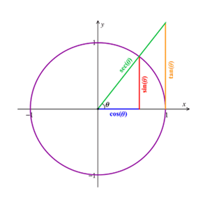
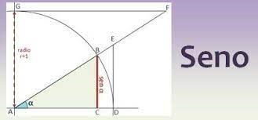
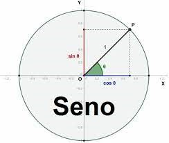
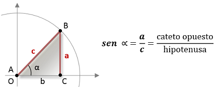

Una función trigonométrica
En el contexto de las matemáticas, el seno es una función trigonométrica de
un triángulo rectángulo, que se calcula a partir de la división del cateto
opuesto por la hipotenusa. De este modo, el seno de un triángulo cuyo cateto
opuesto mide 20 centímetros y su hipotenusa, 60 centímetros, es igual a 0,33.
La trigonometría define la ley de los senos como una relación de
proporcionalidad (o sea, una razón o relación constante entre magnitudes
que pueden ser medidas) entre la longitud de cada lado de un triángulo y
el seno de cada ángulo opuesto respectivo.
Esto también se conoce con el nombre de teorema de los senos y suele
presentarse con la siguiente definición: si en el triángulo ABC
(los nombres de sus ángulos) entendemos que a, b y c son las longitudes
de sus lados opuestos, podemos decir que a / sin A = b / sin B = c / sin C.
Los ángulos A, B y C también pueden aparecer como α, β y γ (alfa, beta y gama),
las tres primeras letras del alfabeto griego. Cabe mencionar que no muchos
conocen su demostración, a pesar de que ésta sea muy sencilla y de tratarse
de una de las leyes trigonométricas más usadas. Veamos, por lo tanto, su demostración.

Entre las funciones trigonométricas de los ángulos rectángulos, aparece el seno.
Demostración de la ley
En primer lugar, debemos dibujar el triángulo ABC y denotar su circuncentro O,
o sea el centro de su circunferencia circunscrita, la cual en este caso se define
como aquella que pasa por todos los vértices del triángulo, y dibujar también dicha circunferencia.
El paso siguiente consiste en trazar una línea que contenga el segmento BO y
que continúe hasta atravesar el lado AC y corte la circunferencia, para dar
lugar al diámetro BP.
En este momento deberíamos observar un triángulo recto, PCB.
Los ángulos P y A son congruentes, ya que los dos son inscritos y abren BC.
Un ángulo inscrito es convexo y su vértice se encuentra en una circunferencia,
además de estar constituido por semirrectas cuerdas o secantes de ésta.
Todo esto da lugar a la siguiente igualdad, según la función seno:
sin A = sin P = BC / BP = a / 2R, siendo R el radio.
Finalmente, al despejar 2R podemos obtener a / sin A = 2R y si repetimos esto
con otros dos diámetros, uno a partir de A y otro, de C, podemos confirmar que
todas las fracciones resultantes son iguales a 2R.

Imagenes
